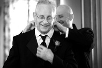
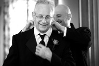

Next Photo
-
Vote
Sunflower Staring Contest
A bee takes on a sunflower in this staring contest. Though I did not stay until they had finished I am betting on the sunflower. The photo appeals to me for a couple of reasons. First, the mood of the photo is happy and slightly funny. The size of the sunflower compared to the bee adds a slightly entertaining touch to the photo. The empty space on the bee side makes the honey bee look even smaller in comparison. Also, the sunflower looks to have a bit of an attitude towards the bee, which I like. The photo also captures something that you do not see every day; A bee in mid flight with decent detail. The photo has pleasant colors, the yellow lightening the mood even more, and wonderful bokeh. This blurring isolates the two subjects in their contest.
More...
Title: Sunflower Staring Contest
Description: A bee takes on a sunflower in this staring contest. Though I did not stay until they had finished I am betting on the sunflower. The photo appeals to me for a couple of reasons. First, the mood of the photo is happy and slightly funny. The size of the sunflower compared to the bee adds a slightly entertaining touch to the photo. The empty space on the bee side makes the honey bee look even smaller in comparison. Also, the sunflower looks to have a bit of an attitude towards the bee, which I like. The photo also captures something that you do not see every day; A bee in mid flight with decent detail. The photo has pleasant colors, the yellow lightening the mood even more, and wonderful bokeh. This blurring isolates the two subjects in their contest.
Keywords: sunflower bee staring contest
Hidden: n
Date added: Thu Sep 06 16:26:29 CDT 2007
Date taken: Tue Aug 14 23:31:28 CDT 2007
Camera: Canon EOS DIGITAL REBEL XT.
Resolution: 3456x2304
Mode: 0
Shutter speed: 632020/65536
Flash: 16
Exposure time: 1/800
Iso: 400
Metering: 5
Aperture: 435412/65536
Focal length: 190/1
Artist: NathanielGuy Mahieu
Copyright: 2007 NathanielGuy Mahieu
Views: 601
 
